After the summit and new strikes on Kyiv: ceasefire by Dec 31 at 8%, by mid-2027 56%. Polymarket odds of a Russia-Ukraine ceasefire agreement by each deadline, hourly, last 30 days. Bets, not forecasts. Source: https://polymarket.com/event/russia-x-ukraine-ceasefire-agreement-by
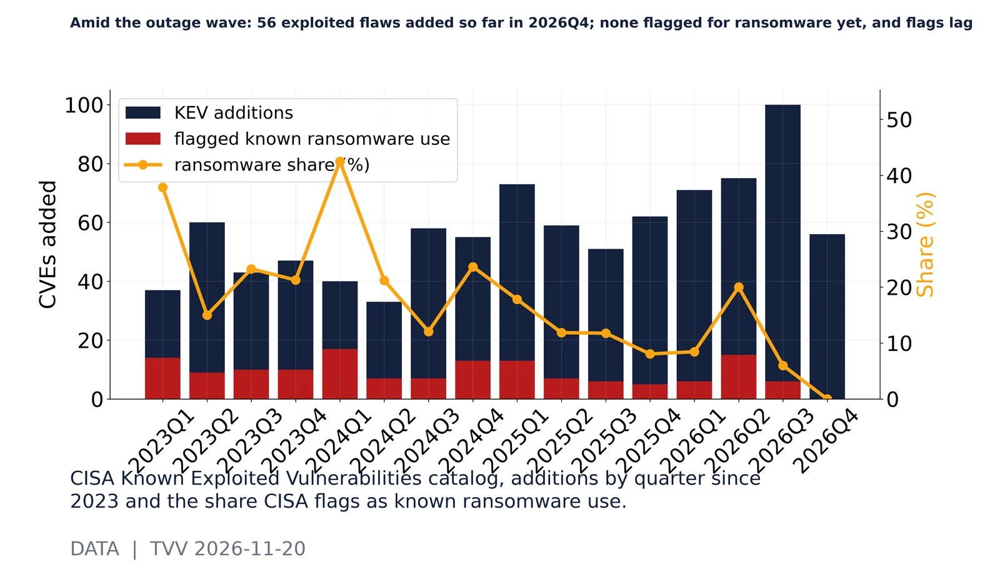
Amid the outage wave: 56 exploited flaws added so far in 2026Q4; none flagged for ransomware yet, and flags lag. CISA Known Exploited Vulnerabilities catalog, additions by quarter since 2023 and the share CISA flags as known ransomware use. Source: https://www.cisa.gov/known-exploited-vulnerabilities-catalog
Power for AI data centers sold with the AI trade: GE Vernova now 36% below its 2026 high. Daily closes indexed to Dec 31, 2025 = 100: independent power producers and grid-equipment maker serving data centers versus QQQ. Source: https://finance.yahoo.com/quote/VST/
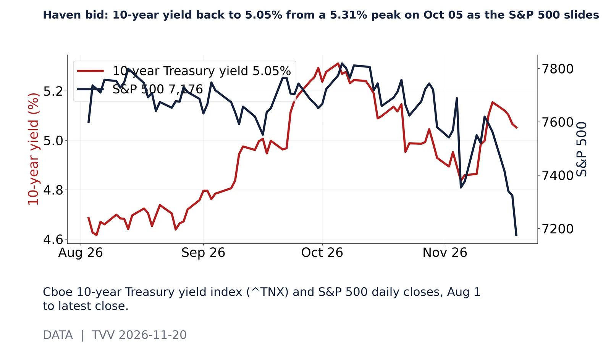
Haven bid: 10-year yield back to 5.05% from a 5.31% peak on Oct 05 as the S&P 500 slides. Cboe 10-year Treasury yield index (^TNX) and S&P 500 daily closes, Aug 1 to latest close. Source: https://finance.yahoo.com/quote/%5ETNX/
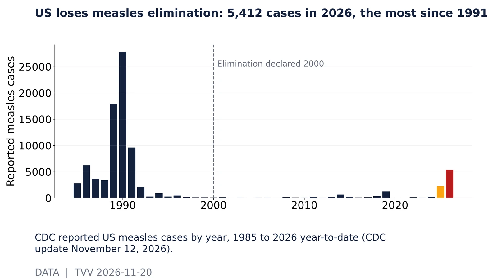
US loses measles elimination: 5,412 cases in 2026, the most since 1991. CDC reported US measles cases by year, 1985 to 2026 year-to-date (CDC update November 12, 2026). Source: https://www.cdc.gov/measles/data-research/index.html
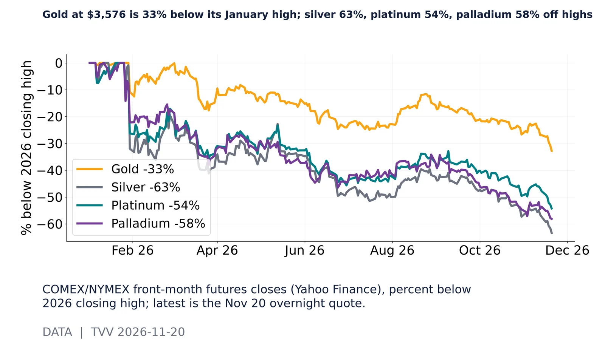
Gold at $3,576 is 33% below its January high; silver 63%, platinum 54%, palladium 58% off highs. COMEX/NYMEX front-month futures closes (Yahoo Finance), percent below 2026 closing high; latest is the Nov 20 overnight quote. Source: https://finance.yahoo.com/quote/GC%3DF/
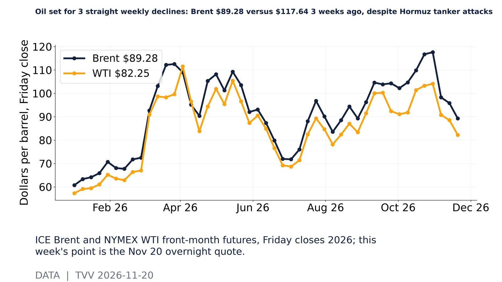
Oil set for 3 straight weekly declines: Brent $89.28 versus $117.64 3 weeks ago, despite Hormuz tanker attacks. ICE Brent and NYMEX WTI front-month futures, Friday closes 2026; this week's point is the Nov 20 overnight quote. Source: https://finance.yahoo.com/quote/BZ%3DF/
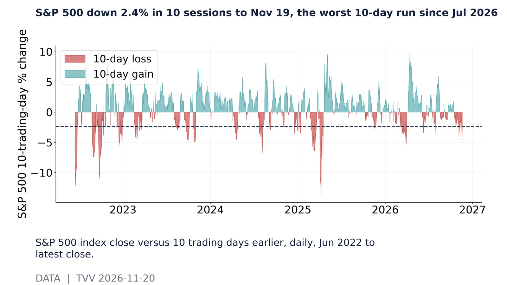
S&P 500 down 2.4% in 10 sessions to Nov 19, the worst 10-day run since Jul 2026. S&P 500 index close versus 10 trading days earlier, daily, Jun 2022 to latest close. Source: https://finance.yahoo.com/quote/%5EGSPC/history/
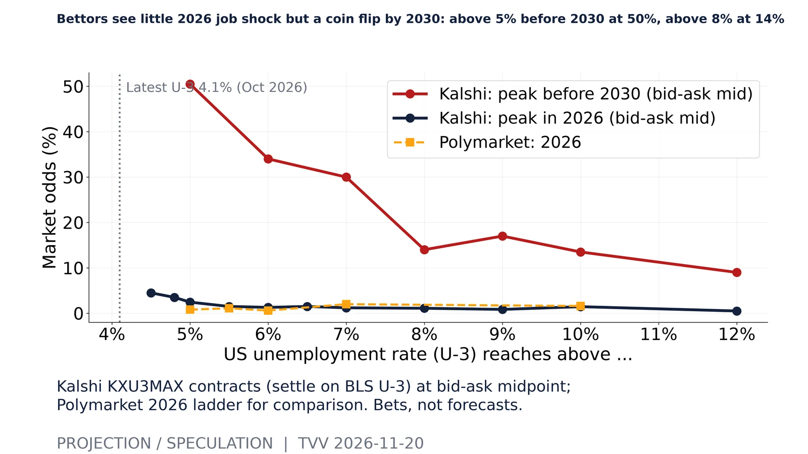
Bettors see little 2026 job shock but a coin flip by 2030: above 5% before 2030 at 50%, above 8% at 14%. Kalshi KXU3MAX contracts (settle on BLS U-3) at bid-ask midpoint; Polymarket 2026 ladder for comparison. Bets, not forecasts. Source: https://kalshi.com/markets/kxu3max/unemployment-spike/kxu3max-27
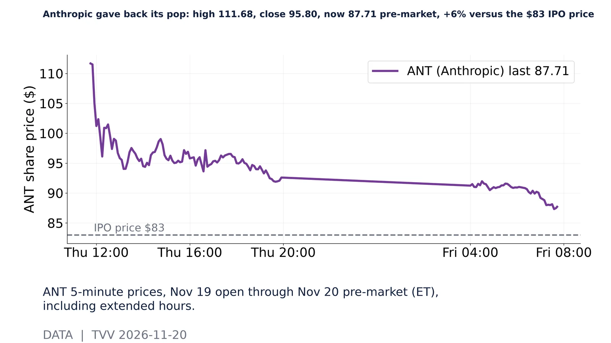
Anthropic gave back its pop: high 111.68, close 95.80, now 87.71 pre-market, +6% versus the $83 IPO price. ANT 5-minute prices, Nov 19 open through Nov 20 pre-market (ET), including extended hours. Source: https://finance.yahoo.com/quote/ANT/
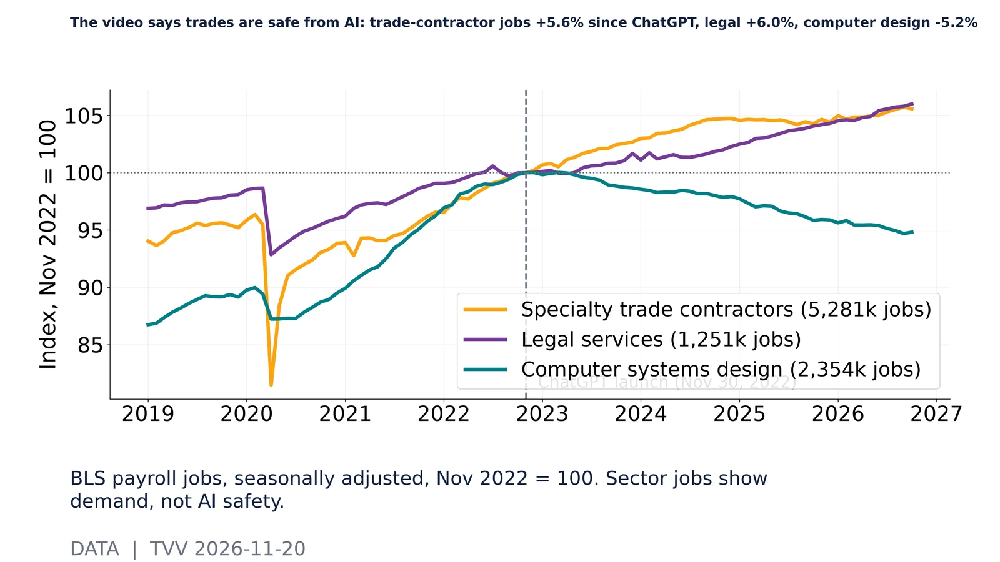
The video says trades are safe from AI: trade-contractor jobs +5.6% since ChatGPT, legal +6.0%, computer design -5.2%. BLS payroll jobs, seasonally adjusted, Nov 2022 = 100. Sector jobs show demand, not AI safety. Source: https://fred.stlouisfed.org/series/CES2023800001
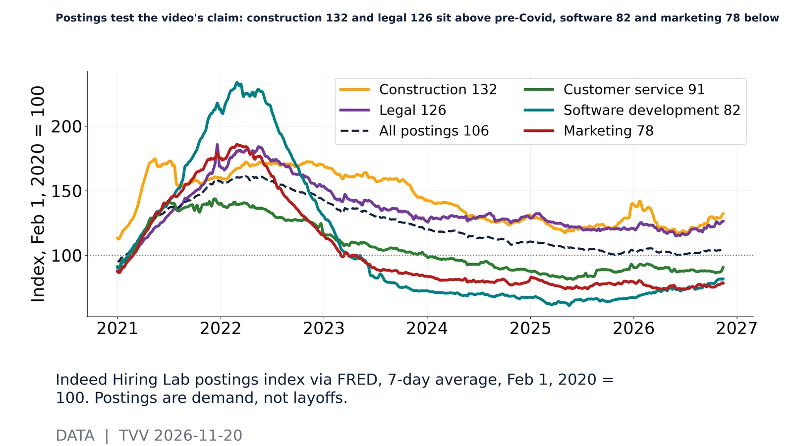
Postings test the video's claim: construction 132 and legal 126 sit above pre-Covid, software 82 and marketing 78 below. Indeed Hiring Lab postings index via FRED, 7-day average, Feb 1, 2020 = 100. Postings are demand, not layoffs. Source: https://fred.stlouisfed.org/series/IHLIDXUSTPCONS
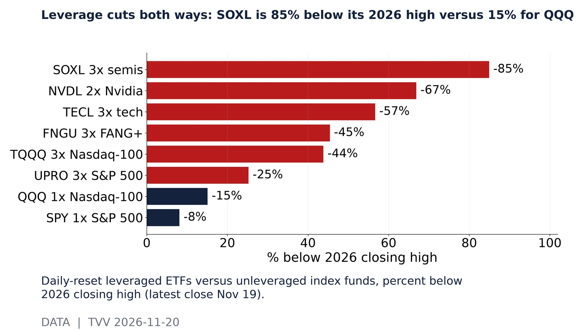
Leverage cuts both ways: SOXL is 85% below its 2026 high versus 15% for QQQ. Daily-reset leveraged ETFs versus unleveraged index funds, percent below 2026 closing high (latest close Nov 19). Source: https://finance.yahoo.com/quote/TQQQ/